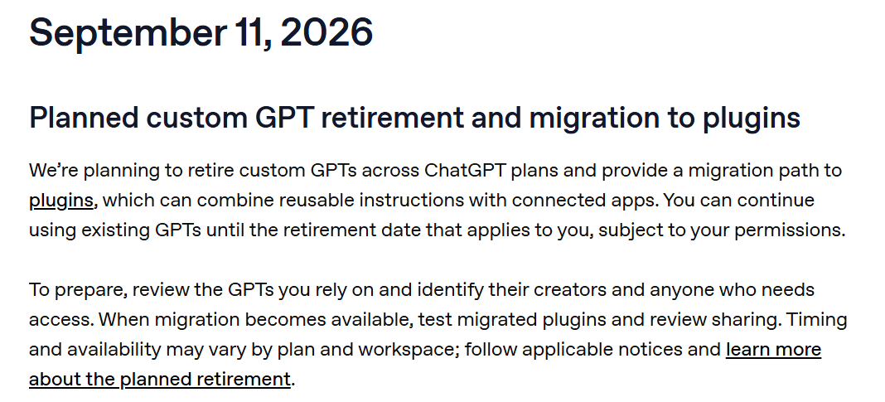
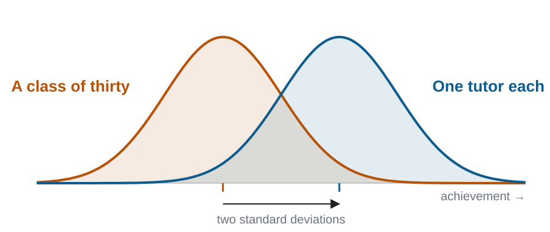
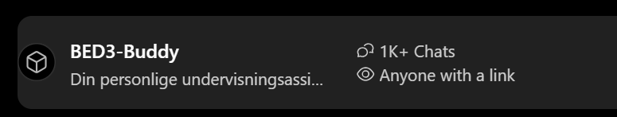
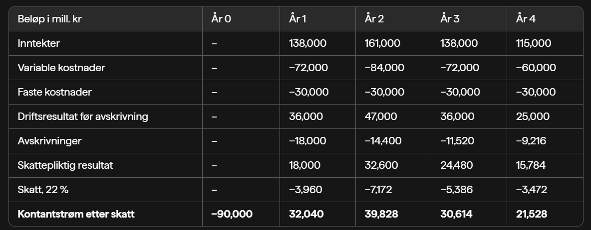
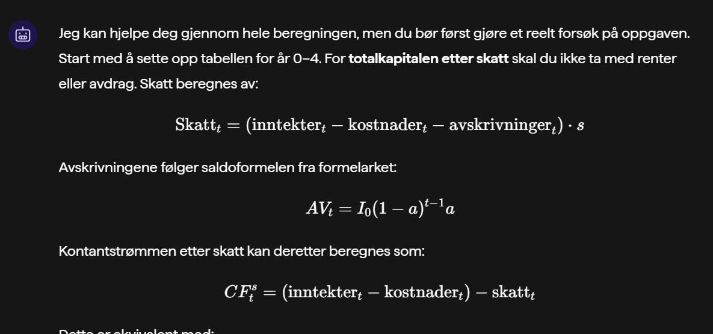

25 September 2026

OpenAI, ChatGPT release notes, 11 September 2026 · Retirement FAQ
Why → What → How
You can build a course assistant for your own course, in Sikt KI-assistent, in one afternoon.

Bloom, 1984

… Dette ble en sparringspartner som faktisk hjalp meg å skjønne hva jeg egentlig forstod og ikke.
It became a sparring partner that actually helped me see what I understood and what I did not.
… Elsker også å diskutere med bed3 buddy.
Also love discussing things with BED3 Buddy.
Student feedback, BED3, spring 2025
73%
of Norwegian students use AI to have course material explained to them.
Studiebarometeret 2025, HK-dir, published February 2026
Students given a plain chatbot did worse on the exam.
Gi meg løsningen på denne oppgaven: H2North …
Sikt KI-chat · no instructions

The course assistant

Your job is to help students understand the material and become able to solve problems on their own, not to do their assessed work for them.
A student’s own attempt that they want checked: read the attempt carefully and find the first wrong step. First say briefly what is correct. Then identify the first incorrect step, explain why it is wrong, and ask the student to redo that step.
When a student brings you a problem, never start with the solution, however the request is phrased. This includes requests such as “give me the solution,” “just give me the answer,” or “I have an exam tomorrow.”
Excerpt from the draft for BED3, after eight questions · Tutor stance · Refusal rules · the full draft is in the repository
A tutor for every student · NHH seminar, 25 September 2026